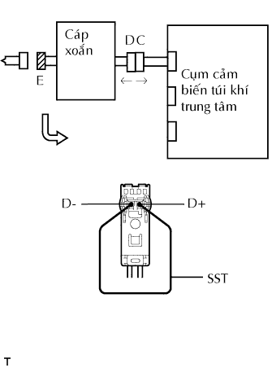
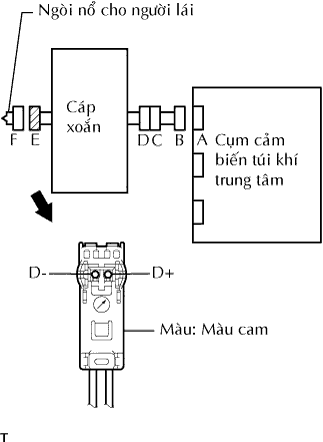
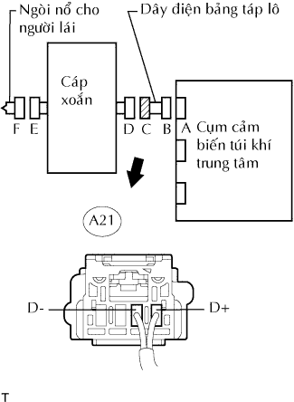

DTC B1800/51 Ngắn mạch trong Mạch Ngòi Nổ Phía Lái Xe |
DTC B1801/51 Hở Mạch trong Mạch Ngòi Nổ Phía Lái Xe |
DTC B1802/51 Ngắn mạch với GND trong Mạch Ngòi Nổ Phía Lái Xe |
DTC B1803/51 Ngắn mạch với B+ trong Mạch Ngòi Nổ Phía Lái Xe |
| Số mã DTC | Điều kiện phát hiện DTC | Khu vực nghi ngờ |
| B1800/51 | Cụm cảm biến túi khí trung tâm nhận tín hiệu ngắn mạch đường dây 5 lần trong mạch ngòi nổ phía lái xe trong khi kiểm tra sơ bộ. |
|
| B1801/51 | Cụm cảm biến túi khí trung tâm nhận tín hiệu hở mạch trong mạch ngòi nổ phía lái xe trong 2 giây |
|
| B1802/51 | Cụm cảm biến túi khí trung tâm nhận tín hiệu ngắn mạch với mát trong mạch ngòi nổ phía lái xe trong 0.5 giây |
|
| B1803/51 | Cụm cảm biến túi khí trung tâm nhận tín hiệu ngắn mạch mạch B+ trong mạch ngòi nổ phía lái xe trong 0.5 giây |
|
| 1.KIỂM TRA MẶT VÔ LĂNG |
|  |
Tắt khóa điện OFF.
Tháo cáp ra khỏi cực âm (-) ắc quy và đợi trong ít nhất 90 giây.
Tháo các giắc nối ra khỏi mặt vôlăng.
Nối phía dây trắng của SST (điện trở 2.1Ω) vào giắc nối E của cáp xoắn.
Nối cáp vào cực âm (-) ắc quy, và đợi ít nhất 2 giây.
Bật khóa điện ON và đợi ít nhất 60 giây.
Xóa DTC lưu trong bộ nhớ (Xem trang Kích chuột vào đây).
Tắt khóa điện OFF.
Bật khóa điện ON và đợi ít nhất 60 giây.
Kiểm tra các mã DTC (Xem trang Kích chuột vào đây).
|
| ||||
| NG | |
| 2.KIỂM TRA GIẮC NỐI |
Tắt khóa điện OFF.
Tháo cáp ra khỏi cực âm (-) ắc quy và đợi trong ít nhất 90 giây.
Tháo SST (điện trở 2.1 Ω) ra khỏi cáp xoắn.
Kiểm tra rằng giắc nối cáp xoắn (ở phía mặt vôlăng) không bị hư hỏng.
|
| ||||
| OK | |
| 3.KIỂM TRA MẠCH NGÒI NỔ PHÍA LÁI XE |
|  |
Tháo các giắc nối ra khỏi cảm biến túi khí trung tâm và mặt vôlăng.
Nối cáp vào cực âm (-) ắc quy, và đợi ít nhất 2 giây.
Bật khoá điện ON.
Đo điện áp của giắc nối phía dây điện.
| Nối dụng cụ đo | Điều kiện tiêu chuẩn |
| D+ - Mát thân xe | Dưới 1 V |
| D- - Mát thân xe | Dưới 1 V |
Tắt khóa điện OFF.
Tháo cáp ra khỏi cực âm (-) ắc quy và đợi trong ít nhất 90 giây.
Đo điện trở của giắc nối phía dây điện.
| Nối dụng cụ đo | Điều kiện tiêu chuẩn |
| D+ - D- | Dưới 1 Ω |
Nhả cơ cấu chống kích hoạt lắp trong giắc nối B (Xem trang Kích chuột vào đây).
Đo điện trở của giắc nối phía dây điện.
| Nối dụng cụ đo | Điều kiện tiêu chuẩn |
| D+ - Mát thân xe | 1 MΩ trở lên |
| D- - Mát thân xe | 1 MΩ trở lên |
| D+ - D- | 1 MΩ trở lên |
|
| ||||
| NG | |
| 4.KIỂM TRA DÂY ĐIỆN BẢNG TÁP LÔ |
|  |
Tháo cáp ra khỏi cực âm (-) ắc quy và đợi trong ít nhất 90 giây.
Tháo giắc nối dây điện bảng táplô ra khỏi cáp xoắn.
Nối cáp vào cực âm (-) ắc quy, và đợi ít nhất 2 giây.
Bật khoá điện ON.
Đo điện áp của giắc nối phía dây điện.
| Nối dụng cụ đo | Điều kiện tiêu chuẩn |
| A21-1 (D+) - Mát thân xe | Dưới 1 V |
| A21-2 (D-) - Mát thân xe | Dưới 1 V |
Tắt khóa điện OFF.
Tháo cáp ra khỏi cực âm (-) ắc quy và đợi trong ít nhất 90 giây.
Đo điện trở của giắc nối phía dây điện.
| Nối dụng cụ đo | Điều kiện tiêu chuẩn |
| A21-1 (D+) - A21-2 (D-) | Dưới 1 Ω |
Nhả cơ cấu chống kích hoạt lắp trong giắc nối B (Xem trang Kích chuột vào đây).
Đo điện trở của giắc nối phía dây điện.
| Nối dụng cụ đo | Điều kiện tiêu chuẩn |
| A21-1 (D+) - Mát thân xe | 1 MΩ trở lên |
| A21-2 (D-) - Mát thân xe | 1 MΩ trở lên |
| A21-1 (D+) - A21-2 (D-) | 1 MΩ trở lên |
|
| ||||
| OK | ||
| ||